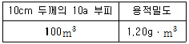

유기농업기능사 (2013-01-27 기출문제)
1과목: 작물재배
1. 작물의 광합성에 필요한 요소들 중 이산화탄소의 대기 중 함량은?
- 약 0.03%
- 약 0.3%
- 약 3%
- 약 30%
(정답률: 84%)

2. 다음 중 장일성 식물이 아닌 것은?
- 시금치
- 양파
- 감자
- 콩
(정답률: 64%)
3. 다음 중 중금속의 유해작용을 경감시키는 것은?
- 붕소
- 석회
- 철
- 유황
(정답률: 75%)
4. 다음 중 종자의 발아억제물질은?
- 지베렐린
- ABA(Abscissic acid)
- 사이토카이닌
- 에틸렌
(정답률: 80%)
5. 수해의 사전대책으로 옳지 않은 것은?
- 경사지와 경작지의 토양을 보호한다.
- 질소과용을 피한다.
- 작물의 종류나 품종의 선택에 유의한다.
- 경지정리를 가급적 피한다.
(정답률: 88%)
6. 다음 중 칼리비료에 대한 설명으로 바르지 못한 것은?
- 칼리비료는 거의가 수용성이며 비효가 빠르다.
- 황산칼륨과 염화칼륨이 주된 칼리질 비료이다.
- 단백질과 결합된 칼리는 수용성이며 속효성이다.
- 유기태칼리는 쌀겨, 녹비, 퇴비, 산야초 등에 많이 들어있다.
(정답률: 57%)
7. 병충해 방제 방법 중 경종적 방제법으로 옳은 것은?
- 벼의 경우 보온 육묘한다.
- 풀잠자리를 사육하면 진딧물을 방제한다.
- 이병된 개체는 소각한다.
- 맥류 깜부기병을 방제하기 위해 냉수온탕침법을 실시한다.
(정답률: 61%)
8. 기지현상의 원인이라고 볼 수 없는 것은?
- C.E.C의 증대
- 토양 중 염류집적
- 양분의 소모
- 토양선충의 피해
(정답률: 73%)
9. 식물의 미소식물군 중 독립영양생물에 속하는 것은?
- 녹조류
- 곰팡이
- 효모
- 방선균
(정답률: 64%)
10. 논토양의 토층분화와 탈질현상에 대한 설명 중 옳지 않은 것은?
- 논토양에서 산화층은 산화제2철이, 환원층은 산화제1철이 쌓인다.
- 암모니아태질소를 산화층에 주면 질화균에 의해서 질산이 된다.
- 암모니아태질소를 환원층에 주면 절대적 호기균인 질화균의 작용을 받지 않는다.
- 질산태질소를 논에 주면 암모니아태질소보다 비효가 높다.
(정답률: 49%)
11. 벼 재배시 발생하는 추락현상에 대한 설명으로 옳은 것은?
- 개담의 역사가 짧고 유기물 함량이 낮은 미숙답에서 주로 발생한다.
- 모래함량이 많고 용탈이 심한 사질답에서 주로 발생한다.
- 개답의 역사가 짧은 간척지로 염분농도가 높은 염해답에서 주로 발생한다.
- 황화철이 부족하여 무기양분흡수가 저해되는 노후화답에서 주로 발생한다.
(정답률: 77%)
12. 삼한시대에 재배된 오곡에 포함되지 않는 작물은?
- 수수
- 보리
- 기장
- 피
(정답률: 64%)
13. 도복 방지대책과 가장 거리가 먼 것은?
- 키가 작고 대가 튼튼한 품종을 재배한다.
- 서로 지지가 되게 밀식한다.
- 칼리질 비료를 사용한다.
- 규산질 비료를 사용한다.
(정답률: 83%)
14. 생육기간이 비슷한 작물들을 교호로 재배하는 방식으로 콩 2이랑에 옥수수 1이랑을 재배하는 작부체계는?
- 혼작
- 교호작
- 간작
- 주위작
(정답률: 87%)
15. 작물수량을 최대로 올리기 위한 주요한 요인으로 나열된 것은?
- 품종, 비료, 재배기술
- 유전성, 환경조건, 재배기술
- 품종, 기상조건, 종자
- 유전성, 비료, 종자
(정답률: 87%)
16. 작물에 광합성과 수분상실의 제어 역할을 하고, 결핍되면 생장점이 말라죽고 줄기가 약해지며 조기낙엽 현상을 일으키는 필수원소는?
- K
- P
- Mg
- N
(정답률: 59%)
17. 재배환경 중 온도에 대한 설명이 맞는 것은?
- 작물 생육이 가능한 범위의 온도를 유효온도라고 한다.
- 작물의 생육단계 중 생식생장기간 동안에 소요되는 총온도량을 적산온도라고 한다.
- 온도가 1℃ 상승하는데 따르는 이화학적 반응이나 생리작용의 증가배수를 온도계수라고 한다.
- 일변화는 작물의 결실을 저해한다.
(정답률: 60%)
18. 토양의 양이온교환용량의 값이 크다는 의미는?
- 산도가 높음을 의미
- 토양의 공극량이 큼을 의미
- 토양의 투수력이 큼을 의미
- 비료성분을 지니는 힘이 큼을 의미
(정답률: 57%)
19. 작물의 재배적 특징으로 옳지 않은 것은?
- 토지를 이용함에 있어 수확체감의 법칙이 적용된다.
- 자연환경의 영향으로 생산물량 확보가 자유롭지 못하다.
- 소비면에서 농산물은 공산물에 비하여 수요탄력성과 공급탄력성이 크다.
- 노동의 수요가 연중 균일하지 못하다.
(정답률: 73%)
20. 어떤 종자표본의 발아율이 80%이고 순도가 90%일 경우, 종자의 진가(용가)는?
- 90
- 85
- 80
- 72
(정답률: 74%)
2과목: 토양관리
21. 다음 중 토양산성화의 원인으로 작용하지 않는 것은?
- 인산이온의 불용화
- 유기물의 현기성 분해 산물
- 과도한 요소비료의 시용
- 점토광물의 풍화에 따른 AI 이온의 가수분해
(정답률: 38%)
22. 토양내 미생물의 바이오매스량(ha당 생체량)이 가장 큰 것은?
- 세균
- 방선균
- 사상균
- 조류
(정답률: 66%)
23. 토양침식에 미치는 영향과 가장 거리가 먼 것은?
- 토양화학성
- 기상조건
- 지형조건
- 식물생육
(정답률: 50%)
24. 석회암지대의 천연동굴은 사람이 많이 드나들면 호흡때문에 훼손이 심화될 수 있다. 천연동굴의 훼손과 가장 관계가 깊은 풍화작용은?
- 가수분해(hydrolysis)
- 산화작용(oxidation)
- 탄산화작용(carbonation)
- 수화작용(hydration)
(정답률: 75%)
25. 우리나라 밭토양의 일반적인 특성이 아닌 것은?
- 곡간지 및 산록지와 같은 경사지에 많이 분포되어 있다.
- 토성별 분포를 보면 세립질 토양이 조립질 토양보다 많다.
- 저위생산성인 토양이 많다.
- 밭토양은 환원상태이므로 유기물의 분해가 논토양보다 빠르다.
(정답률: 71%)
26. 유기물을 많이 사용한 토양의 보비력이 높은 이유는?
- 유기물이 공극을 막아 비료의 유실을 막아주기 때문에
- 유기물이 토양의 점토종류를 변화시키기 때문에
- 유기물은 식물이 비료를 흡수하는 것을 막아주기 때문에
- 유기물은 전기적으로 비료를 흡착하는 능력이 크기 때문에
(정답률: 66%)
27. 입단구조의 생성에 대한 설명으로 가장 거리가 먼 것은?
- 양이온이 점토입자와 점토입자 사이에 흡착되어 입단을 형성한다.
- 유기물질의 수산기나 카르복실기가 점토광물과 결합하여 입단을 형성한다.
- 식물뿌리가 완전히 분해되면서 생기는 탄산에 의하여 입단을 형성한다.
- 폴리비닐, 크릴리움 등은 입자를 접착시켜 입단을 형성한다.
(정답률: 57%)
28. 다음 중 논토양의 특성으로 옳지 않은 것은?
- 호기성 미생물의 활동이 증가된다.
- 담수하면 토양은 환원상태로 전환된다.
- 담수 후 대부분의 논토양은 중성으로 변한다.
- 토양용액의 비전도도는 처음에는 증가되다가 최고에 도달한 후 안정된 상태로 낮아진다.
(정답률: 60%)
29. 한랭습윤지역에 생성된 포트졸 토양의 설명으로 옳은 것은?
- 용탈층에는 규산이 남고, 집적층에는 Fe 및 Al이 집적된다.
- 용탈층에는 Fe 및 Al이 남고, 집적층에는 염기가 집적된다.
- 용탈층에는 염기가 남고, 집적층에는 규산이 집적된다.
- 용탈층에는 염기가 남고, 집적층에는 Fe 및 Al이 집적된다.
(정답률: 50%)
30. Munsell 표기법에 의한 토양색이 7.5R 7/2일 때 채도를 나타내는 기호로 옳은 것은?
- 7.5
- R
- 7
- 2
(정답률: 58%)
31. 토양이 산성화됨으로써 발생하는 현상이 아닌 것은?
- 미생물의 활성 감소
- 인산의 불용화
- 알루미늄 등 유해금속이온 농도 증가
- 탈질반응에 따른 질소 손실 증가
(정답률: 43%)
32. 토양의 평균적인 입자 밀도는?
- 0.7 mg/m3
- 1.5 mg/m3
- 2.65 mg/m3
- 5.4 mg/m3
(정답률: 75%)
33. 다음 중 양이온치환용량이 가장 큰 것은?
- 부식(humus)
- 카울리나이트(kaolinite)
- 몬모릴로나이트(montmorillonite)
- 버미큘라이트(vermiculite)
(정답률: 69%)
34. 다음 중 토양과 비교적 오랫동안 잔류되는 농약은?
- 유기인계 살충제
- 지방족계 제초제
- 유기염소계 살충제
- 요소계 살충제
(정답률: 65%)
35. 토양의 3상에 속하지 않는 것은?
- 액상
- 기상
- 고상
- 주상
(정답률: 89%)
36. 균근(mycorrhizae)의 특징에 대한 설명으로 옳지 않은 것은?
- 대부분 세균으로 식물뿌리와 공생
- 외생균근은 주로 수목과 공생
- 내생균근은 주로 밭작물과 공생
- 내외생균근은 균근안에 균사망 형성
(정답률: 50%)
37. 다음 중 습답의 특징이 아닌 것은?
- 환원상태
- 토양 색깔의 회색화
- 추락현상
- 중금속 다량용출
(정답률: 56%)
38. 입단구조의 발달과 유지를 위한 농경지 관리 대책으로 활용할 수 없는 것은?
- 석회물질의 시용
- 유기물의 시용
- 목초의 재배
- 토양 경운 강화
(정답률: 75%)
39. 토양 층위를 지표부터 지하 순으로 옳게 나열된 것은?
- R층 → A층 → B층 → C층 → 0층
- 0층 → A층 → B층 → C층 → R층
- R층 → C층 → B층 → A층 → 0층
- 0층 → C층 → B층 → A층 → R층
(정답률: 77%)
40. 물에 의해 일어나는 기계적 풍화작용에 속하지 않는 것은?
- 침식작용
- 운반작용
- 퇴적작용
- 합성작용
(정답률: 82%)
3과목: 유기농업일반
41. 다음 작물 중 일반적으로 배토를 실시하지 않는 것은?
- 파
- 토란
- 감자
- 상추
(정답률: 69%)
42. 유기축산물인증기준에서 가축복지를 고려한 사육조건에 해당되지 않는 것은?
- 축사바닥은 딱딱하고 건조할 것
- 충분한 휴식공간을 확보할 것
- 사료와 음수는 접근이 용이할 것
- 축사는 청결하게 유지하고 소독할 것
(정답률: 89%)
43. 유기농림산물의 인증기준에서 규정한 재배방법에 대한 설명으로 옳지 않은 것은?
- 화학비료의 사용은 금지한다.
- 유기합성농약의 사용은 금지한다.
- 심근성 작물재배는 금지한다.
- 두과작물의 재배는 허용한다.
(정답률: 79%)
44. 다음 중 물리적 종자 소독방법이 아닌 것은?
- 냉수온탕침법
- 건열처리
- 온탕침법
- 분의소독법
(정답률: 81%)
45. 토양 속 지렁이의 역할이 아닌 것은?
- 유기물을 분해한다.
- 통기성을 좋게 한다.
- 뿌리의 발육을 저해한다.
- 토양을 부드럽게 한다.
(정답률: 91%)
46. 현재 사육되고 있는 가축이 자체농장에서 생산된 사료를 급여하는 조건에서 목초지 및 사료작물 재배지의 전환기간의 기준은?
- 1년
- 2년
- 3년
- 4년
(정답률: 58%)
47. 다음 중 시설원예용 피복재를 선택할 때 고려해야 할 순서로 바르게 나열된 것은?
- 피복재의 규격 → 온실의 종류와 모양 → 경제성 → 재배작물 → 피복재의 용도
- 온실의 종류와 모양 → 재배작물 → 피복재의 규격 → 피복재의 용도 → 경제성
- 재배작물 → 온실의 종류와 모양 → 피복재의 용도 → 피복재의 규격 → 경제성
- 경제성 → 재배작물 → 피복재의 용도 → 온실의 종류와 모양 → 피복재의 규격
(정답률: 74%)
48. 다음은 경작지의 작토층에 대하여 토양의 무게(질량)를 산출하고자 한다. 아래의 “표”를 참고하여 10a의 경작토양에서 10cm 깊이의 건조토양의 무게를 산출한 결과로 맞는 것은?

- 100,000kg
- 120,000kg
- 140,000kg
- 160,000kg
(정답률: 85%)
49. 온실효과에 대한 설명으로 옳지 않은 것은?
- 시설농업으로 겨울철 채소를 생산하는 효과이다.
- 대기 중 탄산가스 농도가 높아져 대기의 온도가 높아지는 현상을 말한다.
- 산업발달로 공장 및 자동차의 매연가스가 온실효과를 유발한다.
- 온실효과가 지속된다면 생태계의 변화가 생긴다.
(정답률: 77%)
50. 다음 중 괴경을 이용하여 번식하는 작물은?
- 고추
- 감자
- 고구마
- 마늘
(정답률: 64%)
51. 친환경인증기관의 인증업무 중 축산물의 인증 종류는 몇가지인가? (단, 인증대상 지역은 대한민국으로 제한한다.)
- 1 가지
- 2 가지
- 3 가지
- 4 가지
(정답률: 69%)
52. 저투입 지속농업(LISA)을 통한 환경친화형 지속농업을 추진하는 국가는?
- 미국
- 영국
- 독일
- 스위스
(정답률: 73%)
53. 종자의 발아조건 3가지는?
- 온도, 수분, 산소
- 수분, 비료, 빛
- 토양, 온도, 빛
- 온도, 미생물, 수분
(정답률: 89%)
54. 토양의 비옥도 유지 및 증진 방법으로 옳지 않은 것은?
- 토양 침식을 막아준다.
- 토양의 통기성, 투수성을 좋게 만든다.
- 유기물을 공급하여 유용미생물의 활동을 활발하게 한다.
- 단일 작목 작부 체계를 유지시킨다.
(정답률: 83%)
55. 다음 중 품종의 형질과 특성에 대한 설명으로 맞는 것은?
- 품종의 형질이 다른 품종과 구별되는 특징을 특성이라고 표현한다.
- 작물의 형태적ㆍ생태적ㆍ생리적 요소는 특성으로 표현된다.
- 작물 키의 장간ㆍ단간ㆍ숙기의 조생ㆍ만생은 품종의 형질로 표현된다.
- 작물의 생산성ㆍ품질ㆍ저항성ㆍ적응성 등은 품종의 특성으로 표현된다.
(정답률: 55%)
56. 볏짚, 보릿짚, 풀, 왕겨 등으로 토양 표면을 덮어주는 방법을 멀칭법이라고 하는데 멀칭의 이점이 아닌 것은?
- 토양 침식 방지
- 뿌리의 과다 호흡
- 지온 조절
- 토양 수분 조절
(정답률: 84%)
57. 친환경농업이 태동하게 된 배경에 대한 설명으로 옳지 않은 것은?
- 미국과 유럽 등 농업선진국은 세계의 농업정책을 소비와 교역위주에서 증산 중심으로 전환하게 하는 견인 역할을 하고 있다.
- 국제적으로는 환경보전문제가 중요 쟁점으로 부각되고 있다.
- 토양양분의 불균형문제가 발생하게 되었다.
- 농업부분에 대한 국제적인 규제가 점차 강화되어가고 있는 추세이다.
(정답률: 72%)
58. 품종의 퇴화원인은 3가지로 분류할 때 해당하지 않는 것은?
- 유전적 퇴화
- 생리적 퇴화
- 병리적 퇴화
- 영양적 퇴화
(정답률: 74%)
59. 세포에서 상동염색체가 존재하는 곳은?
- 핵
- 리보솜
- 골지체
- 미토콘드리아
(정답률: 70%)
60. 토마토를 재배하는 온실에 탄산가스를 주입하는 목적은?
- 호흡을 억제하기 위하여
- 광합성을 촉진하기 위하여
- 착색을 촉진하기 위하여
- 수분을 도와주기 위하여
(정답률: 80%)